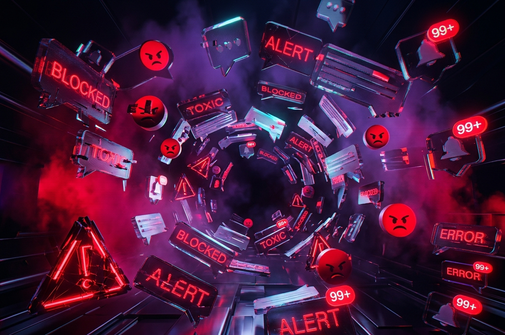
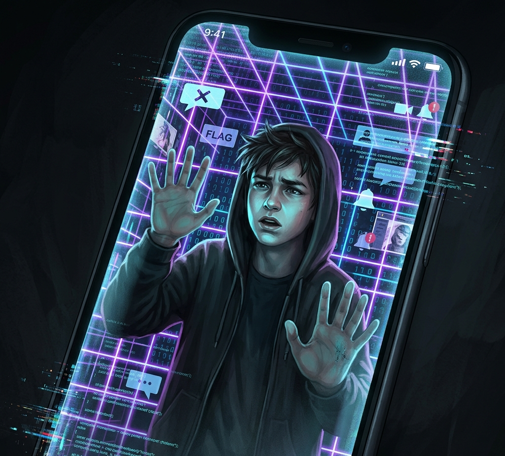
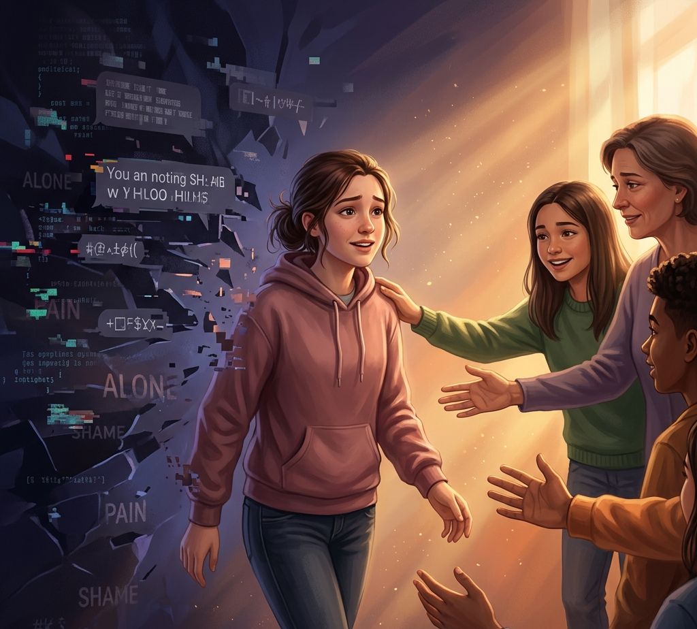

Il cyberbullismo rappresenta una delle sfide più insidiose della nostra epoca digitale. A differenza del bullismo tradizionale, trasforma il mondo online in un palcoscenico costante.

Il cyberbullismo è l'uso delle tecnologie digitali (social media, piattaforme di messaggistica, giochi online, email) per molestare, minacciare, denigrare o escludere intenzionalmente una persona.
Ciò che lo rende particolarmente pericoloso è la "disinibizione online": dietro lo schermo, il bullo spesso perde la percezione della sofferenza della vittima poiché non ne vede le reazioni in tempo reale, abbassando così i freni inibitori che normalmente bloccherebbero un atto aggressivo nel mondo fisico.
I fattori che distinguono il cyberbullismo dal bullismo classico e ne amplificano la gravità.
Un contenuto offensivo (foto, video, commento) può rimanere online per sempre. Anche se rimosso, può essere stato salvato, inoltrato o condiviso migliaia di volte prima della sua cancellazione.
L'umiliazione non avviene davanti a una classe, ma potenzialmente davanti a un'intera rete di contatti. La percezione della "gogna mediatica" amplifica enormemente il dolore della vittima.
La vittima non è al sicuro nemmeno nella sua stanza. Il telefono o il computer diventano i veicoli attraverso cui il bullo entra nell'intimità domestica, colpendo in qualsiasi momento del giorno e della notte.
L'aggressore può nascondersi dietro profili fake, pseudonimi o numeri sconosciuti, rendendo difficile l'identificazione immediata e aumentando a dismisura il senso di impotenza della vittima.
Il cyberbullismo non è un fenomeno monolitico, ma si manifesta attraverso molteplici dinamiche, tutte ugualmente lesive e mirate a sfiancare la vittima.
Scambio di messaggi violenti e volgari inviati intenzionalmente in forum, gruppi o chat pubbliche per scatenare conflitti e reazioni a catena davanti ad un pubblico.
L'invio ossessivo e ripetuto di messaggi offensivi, insulti o minacce direttamente alla vittima, finalizzati a creare un clima di costante terrore e oppressione.
Diffusione organizzata di pettegolezzi, foto decontestualizzate o notizie false create ad hoc per rovinare la reputazione sociale, scolastica o lavorativa della vittima.
Furto di identità digitale o creazione di un falso profilo web a nome della vittima, usato per postare contenuti imbarazzanti e minare la credibilità altrui.
Manipolazione e rivelazione non consensuale di segreti personali, orientamento sessuale o foto private ottenute subdolamente carpendo la fiducia altrui.
Monitoraggio ossessivo, insistente e intimidatorio delle attività online della vittima per perseguitarla in modo costante e minaccioso in ogni suo spostamento digitale.
I dati mostrano un fenomeno sempre più diffuso. Queste stime enfatizzano l'urgenza di prendere posizioni chiare in ambito educativo e familiare.
Quasi 1 milione di studenti italiani (15-19 anni) ha subito episodi di cyberbullismo nel corso dell'ultimo anno (Dati CNR 2025).
Tra i ragazzi under 20, il cyberbullismo risulta in assoluto il rischio più temuto legato all'utilizzo del web (Osservatorio Indifesa 2025).
Ricoprono il duplice ruolo di vittima e autore: una condizione ibrida associata ai massimi livelli di rischio per la salute mentale.
Il cyberbullismo non si limita a insulti o prese in giro online, ma può evolversi in forme molto più gravi e pericolose. Una di queste è il doxxing, ovvero la diffusione pubblica di dati personali di una persona senza il suo consenso (come nome, indirizzo, numero di telefono o profili social).
Un esempio di piattaforma associata a questo fenomeno è Doxbin, un sito nato nel dark web oggi noto per la pubblicazione illegale di informazioni sensibili riguardanti individui presi di mira. Questo tipo di pratica rappresenta una gravissima violazione della privacy.
Le vittime di doxxing possono subire molestie, minacce e attacchi anche nella vita reale, con un forte impatto sulla loro sicurezza e sul loro benessere psicologico. Inoltre, la diffusione non autorizzata di dati personali comporta conseguenze legali severe (reclusione) per chi la compie.
È essenziale comprendere che il cyberbullismo può trasformarsi rapidamente in una minaccia diretta, e che il rispetto della privacy altrui rappresenta il fondamento per l'uso responsabile di Internet.

Le vittime di cyberbullismo sperimentano un senso di isolamento totale e claustrofobico. Poiché l'aggressione viaggia sulle reti digitali, la mente percepisce che "tutti" stiano guardando, portando a conseguenze devastanti:
Se tu o qualcuno che conosci state subendo questi attacchi, agisci seguendo questi step fondamentali.
Reagire o giustificarsi alimenta solo il gioco del bullo. Le provocazioni cercano una reazione emotiva per ottenere conferma del loro potere.
Fai screenshot meticolosi di minacce, commenti pubblici, messaggi privati e profili. Non cancellare le chat: sono le prove cruciali.
Utilizza gli strumenti di "Report" delle piattaforme. Blocca immediatamente gli account abusivi e segnala i contenuti per rimuoverli.
Il cyberbullismo prospera nel segreto. Parlare con un genitore, un insegnante o uno sportello scolastico attiva una reale rete di protezione.

La tua identità digitale non è la tua essenza. Il tuo valore non potrà mai essere misurato dai "like" o dall'odio di chi si nasconde dietro una tastiera per mascherare le proprie insicurezze.
Questo progetto di sensibilizzazione è stato ideato e sviluppato come lavoro di gruppo collaborativo. Ognuno di noi ha messo a disposizione le proprie competenze.
Sviluppo Web & UI Design
Ricerca & Statistiche
Stesura Contenuti Base
Reperimento Immagini